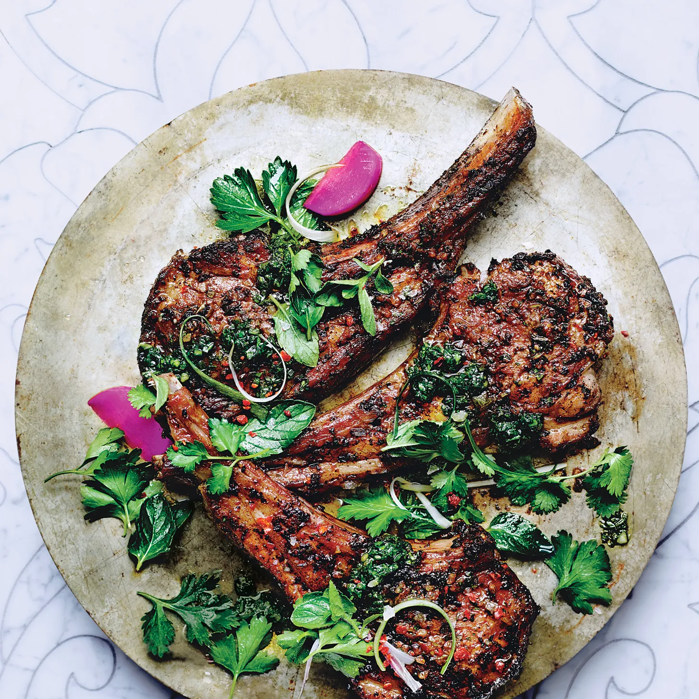

Lamb Chops with Mint Recipe

Food Description!
An elegant and flavorful dish featuring succulent lamb chops marinated in a refreshing mixture of olive oil, fresh mint, garlic, Dijon mustard, red
wine vinegar and honey.
Ingredients
- 4 lamb chops
- 2 table spoons of olive oil
- Salt and black pepper to taste
- 2 tablespoons fresh mint, chopped
- 2 cloves garlic, minced
- 1 tablespoon Dijon mustard
- 1 tablespoon Dijon mustard
- 1 teaspoon honey
Method to deliciousness
- Preheat the oven to 400°F (200°C).
- Season the lamb chops with salt and black pepper.
- Season the lamb chops with salt and black pepper.
- Coat the lamb chops with the marinade, ensuring they are well covered.
- Heat a skillet over medium-high heat. Sear the lamb chops for 2-3 minutes on each side until browned.
- Transfer the lamb chops to a baking dish and roast in the preheated oven for about 10-12 minutes for medium-rare, adjusting the time for your desired doneness.
- Allow the lamb chops to rest for a few minutes before serving. Garnish with additional fresh mint if desired.
Enjoy